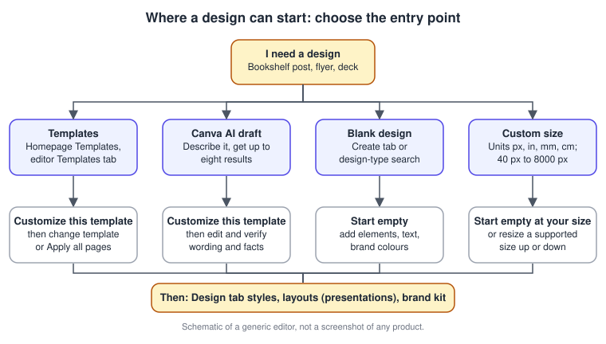
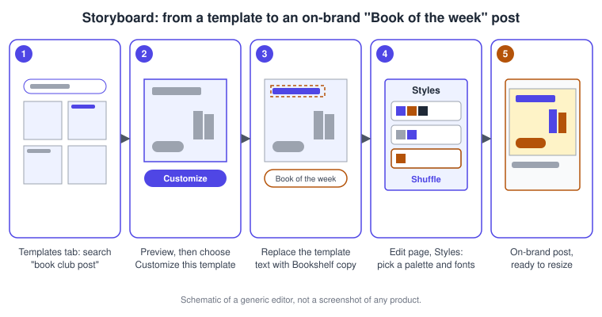
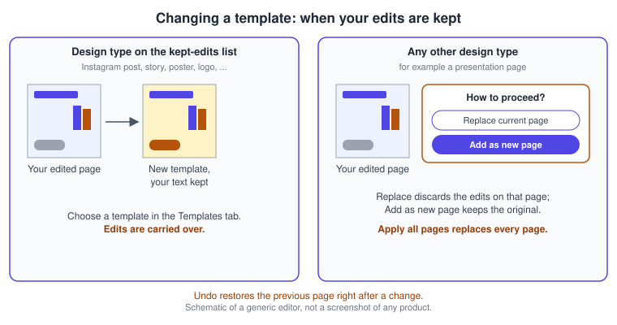
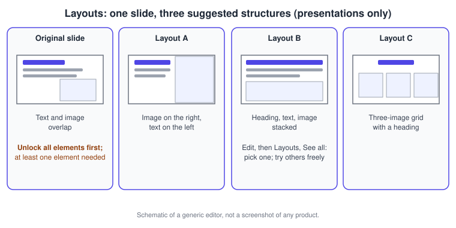
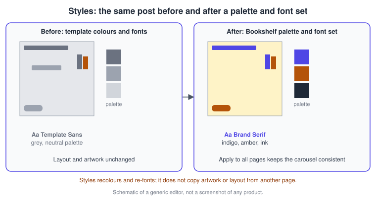
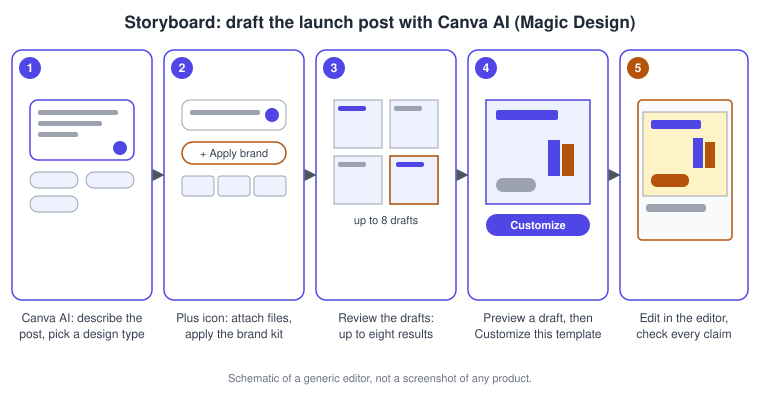

Templates, Layouts and Magic Design
|
This content was generated with the assistance of AI and should be verified against the official documentation before being relied on in production. |
This page was checked against the official Canva Help Center on 2026-11-07. It covers the ways a design in Canva (web, desktop app and mobile apps) gets started and given its look: templates, the template-changing flow, Layouts, the Styles panel with its colour palettes and font sets, blank designs and custom sizes, the AI-drafted designs that Canva used to call Magic Design, and template links for sharing a design as a starting point. Finding and applying templates, changing templates, Layouts, Styles, blank designs and custom sizes are available on every plan, Free, Pro, Business, Enterprise, Education and Nonprofits; what differs by plan is the premium content that some templates contain, which is paid and marked in the library (see https://www.canva.com/pricing/ for plans; no prices are repeated here). Creating a template link is limited to paid plans plus Education and Nonprofits accounts, as described in its own section.
Drafting a design with Canva AI belongs to the AI allowance: the help topic for generating designs sits under Canva AI and points to the usage rules of the allowance, whose Standard, Premium and Ultra tiers are explained on Plans, Pricing and AI Allowance. Generating a design with Canva AI is a Premium-tier action. Canva AI 2.0 launched as a research preview on 2026-04-16 and is now documented in the Help Center without a preview label; no general-availability date is published, and availability varies by account, language and region.
The running example is Bookshelf, the book catalogue and reading-list app designed in the Figma sub-section. Its launch campaign needs a "Book of the week" Instagram post. This page starts that post from a template, gives it the Bookshelf colours and fonts, tries Layouts on a slide, and drafts a second version with Canva AI. The principles behind good choices, hierarchy, contrast and consistency, are on Design Principles in Canva and, for the tool-neutral process, on UX Process and Design Thinking.
Choosing how to start
A Canva design can start in four ways, and the choice decides how much structure you inherit.

| Entry point | What you get | Best for |
|---|---|---|
Template |
A finished, editable design for a design type, found from the homepage or the editor side panel |
Fast results with professional structure |
Canva AI draft |
Up to eight generated template-style results for a prompt, which you open in the editor |
When no template matches the idea |
Blank design |
An empty page with the preset dimensions of a design type |
Full control of the composition |
Custom size |
An empty page in units you choose (px, in, mm or cm) |
Sizes that no design type offers |
Starting from a template is usually the best first move, because it hands you spacing, hierarchy and type pairing that already work together. A blank page is better when the layout is unusual or when you are building a brand template that others will fill in.
Find and use templates
Templates are found in two places. On the homepage, the Templates shortcut in the main area, the Templates entry of the side navigation and the search bar (with the Templates filter above it) all list templates; you select one to preview it and then choose Customize this template to open it in the editor. Inside the editor, the Templates tab of the side panel has its own search bar, and selecting a result adds it to the current design. On mobile, the Templates tab of the bottom menu works the same way, and a Video Template-First flow lets you start a video from a video template and tap Customize this template.
If the design is going to be printed, the Help Center recommends CMYK colours so that colours are printer-friendly; print specifics are on Print and Mockups.
Procedure: build the "Book of the week" post from a template
-
Open the homepage and select Templates, or open a blank Instagram post and choose the Templates tab in the editor side panel.
-
Search for keywords such as "book club post" and press Enter.
-
Select a result to preview it, then choose Customize this template (from the editor, the result is added to your page).
-
Replace the template text with the Bookshelf copy: the title, the book name and a call to action.
-
Open the page’s Edit panel, choose Styles and pick the Bookshelf palette and font set (see Styles: colour and font combinations).
-
Check the result against the brand and continue with resizing on Resize, Bulk Create and Translate.

Templates that can be generated
When the search finds nothing that fits, the Templates panel can hand the search to Canva AI. Search with four or more keywords, for example a funny Halloween party poster, and under Can’t find something? choose Try Canva AI. You can review the prompt and add context with the plus icon (Upload, Add from Canva, Apply brand and Connect) before you select Submit; Canva AI adds the generated design as a new page. The Help Center notes that this Canva AI experience may not be available to everyone yet.
Change the template of an existing design
A template is not a one-time choice. You can swap it at any time, even after editing, and the page keeps or discards your edits depending on the design type.
Procedure: try a different template on the Bookshelf post
-
Select the page you want to change. In a multi-page design, scroll to it and select anywhere on the page.
-
In the editor side panel choose Templates. If a template is already open and the search bar is hidden, select the Back arrow of the panel.
-
Enter keywords and press Enter.
-
Select a template to add it to the page, or select Apply all pages to use every page of that template.
-
If a dialog asks how to proceed, choose Replace current page, which undoes all edits on that page, or Add as new page, which keeps the original and adds the template page after it.
-
If you do not like the result, select Undo on the editor toolbar.

Edits are kept automatically for these design types: Business Cards, Facebook Ads, Covers, Posts and Stories, Instagram Posts and Stories, Logos, Posters, Snapchat Geofilters, Social Graphic, Twitter Posts, YouTube Thumbnails and YouTube Channel Art, and WhatsApp Stories. For anything else, expect the dialog. Apply all pages replaces all pages of your design, so duplicate the design first if it holds work you want to keep.
Layouts for presentations
Layouts rearrange and resize what is already on a slide into a designed structure. Canva suggests layouts from the text, images, graphics, spacing and colours present, so the feature needs at least one graphic, element or text on the page. Layouts are only available for Presentation templates, and locked elements block them: if any item is locked you are prompted to Unlock all elements before continuing.

Procedure: tidy a Bookshelf launch slide with Layouts
-
Open the presentation and select the page thumbnail or the page background.
-
In the floating toolbar select Edit, which opens the Edit Page panel.
-
Go to Layouts and select See all.
-
If prompted, select Unlock all elements.
-
Browse the suggestions and select one; select another to compare.
Known limits from the Help Center are worth planning for. With too many elements, Layouts may offer no suggestions. Images sometimes do not carry over and must be re-added. Because layouts keep your fonts, text can overlap other elements until you change the font size. A layout that allows little text may omit some of yours, so shorten the copy first. If you start from a responsive doc, spreadsheet or Instagram post and add a 16:9 page, Layouts appear but only preset results are shown. Presentations as a whole are covered on Presentations.
Source: Canva Help Center: Use Layouts
Styles: colour and font combinations
Styles applies a colour palette, a font set, an image palette or a combination of them across the pages of a design. It deliberately does not copy a page’s artwork, patterns or layout: to reuse the complete design of a page, duplicate the page and edit the copy. In presentations, layouts are applied page by page, not through Styles.

Procedure: apply Bookshelf colours and fonts
-
In the editor select the page thumbnail or the page background.
-
In the floating toolbar select Edit, which opens the Edit Page panel.
-
Select Styles.
-
Choose a colour palette, a font set, an image palette or a combination, and select Apply to all pages if you want the whole design to follow.
-
Select Shuffle to see variations of the style.
Try styles early. When a design already has many slides, style suggestions may not be available. Your own brand colours and fonts live in the Brand Kit rather than in these suggestions, which is the subject of Brand Kit and Brand Voice; use Styles to explore and the Brand Kit to standardise. Colour palettes in depth are on Color, Gradients and Palettes.
Design from scratch and custom sizes
When no template should shape the work, create a blank design. On the homepage, the Create tab of the left panel opens a Create a design page with a search bar for the design type or size; selecting a result opens a blank design at that preset. The banner row also offers For you, a list of recommended design types.
For other sizes use Custom size on the homepage banner: pick the unit (px, in, mm or cm), enter the width and height, then select Create new design or one of the Suggested options. Dimensions must be at least 40 x 40 px and no larger than 8000 x 3125 px; the fields turn red outside the allowed range. For a design beyond the limits, for example a large banner, start with a supported size, then use the custom size fields of the resize option, lock the aspect ratio and reduce one side so the other follows. Resizing a design across formats is covered on Resize, Bulk Create and Translate.
On mobile you can start a design from a photo in your camera roll through the floating action button at the bottom right: pick a recent photo, tap Add, choose Photo dimensions to set the design type, then tap Use in a design or Edit image. This option is not available in China. Designs open in a new browser tab by default; Link opening in your profile Settings changes that.
Procedure: start a blank "LinkedIn banner" for Bookshelf
-
On the homepage select Create and search for the design type, or choose Custom size.
-
For a custom size, select a unit and enter the width and height inside the allowed range.
-
Select Create new design.
-
Add text and elements, then apply your brand from the Brand tab.
Drafting with Canva AI (formerly Magic Design)
Magic Design was Canva’s AI feature for turning a prompt into editable designs. The Help Center page that kept the address using-magic-design now describes the same job under the name Canva AI: you describe a social post, presentation, poster or video and receive design drafts that match your brand. The feature is reached from the Canva AI entry of the homepage side navigation, or from the editor side panel on desktop and the bottom menu on mobile. It is part of the conversational Canva AI described on the Canva AI assistant page, and the individual Magic tools are on Magic Studio Tools.
The prompt box accepts typed text or a spoken prompt (microphone icon) and optional design types for a more specific request. The plus icon adds context: Upload files from your device, Add from Canva an existing design or upload, Apply brand to use a Brand Kit, and Connect to import files from connected third-party apps. Web Research can bring in current information. Results arrive as up to eight templates; select Brand Hub to bring in your brand’s styles. From the homepage you can preview a result through the more icon and Preview this template, and Customize this template opens it in the editor, where you can also download it or enter another prompt.
The designs that can be created are presentations, posters, cards, flyers, square invitations, business cards, postcards, documents and social designs such as Instagram posts and stories, Facebook posts and covers, Pinterest pins, YouTube thumbnails and banners, and X posts. Videos for social platforms can be 1920 x 1080 px, 1080 x 1920 px or 1080 x 1080 px. Owners and administrators control who on a team can use Canva AI, and some members may not have access because of their language setting.
Procedure: draft the "Book of the week" post with Canva AI
-
From the homepage select Canva AI in the side navigation.
-
Describe the post, for example a square Instagram post announcing the weekly book with a title area and a call to action, and choose the matching design type.
-
Select the plus icon and choose Apply brand so the Bookshelf Brand Kit is used.
-
Press Enter or select Submit and review the results.
-
Preview a result and select Customize this template to open it in the editor.
-
Edit the text, check every statement for accuracy, and use Styles to fine-tune colours.

AI drafts are starting points. Generated text can be wrong, and generated imagery is subject to the licensing and safe-use rules described on Licensing, Responsible AI and Canva Shield.
Share a design as a template link
A template link lets anyone who opens it view the design and use it as their own template, which is how a campaign design can become a reusable starting point without giving anyone edit access to the original. The article lists Pro, Teams, Enterprise, Education and Nonprofits accounts as eligible; Canva Business replaced Teams for new customers on 2025-10-30, so check your account if you are on a newer plan. A condition applies to work email domains: when the creator uses a work domain, recipients with the same domain must be on a paid plan to open the link, while people on general email domains or outside the organisation can open and edit it.
Procedure: publish the "Book of the week" design as a template link
-
Open the design and select Share in the menu bar above the editor.
-
Select Template link; if you do not see it, select See all first.
-
Select Create template link, then Copy to copy the link.
-
To stop sharing, open Share, go to Template link and select Delete template link. The URL becomes inactive and a new link creates a new URL.
Brand-controlled templates with locked elements and approvals are covered on Brand Templates, Controls and Approvals, and general sharing on Sharing and Permissions.
Desktop and mobile differences
-
Finding templates, changing templates, Styles and custom sizes are described by the Help Center for both desktop and mobile, with the mobile bottom menu replacing the side panel.
-
The Video Template-First flow and the start-from-photo floating action button are mobile features.
-
Layouts and the template-change flow need the page selected first; the Help Center documents both flows for desktop and mobile.
-
The shortcuts for undoing a change and moving around the editor are listed on Keyboard Shortcuts and Quick Actions; the template flows themselves use the side panel and toolbars.
Common pitfalls
-
Applying all pages of a template replaces every page, so duplicate the design first.
-
Choosing Replace current page discards edits on that page for design types outside the kept-edits list.
-
Layouts do nothing while elements are locked, and they offer no result when the page holds too many elements.
-
Styles recolours and re-fonts but does not copy artwork; duplicate a page to reuse its whole design.
-
Custom sizes outside 40 x 40 px to 8000 x 3125 px are refused; resize from a supported size instead.
-
A Canva AI draft may read well and still contain wrong claims; edit and verify before publishing.
Where older guides are outdated
| Older statement | Current behaviour | Date |
|---|---|---|
Magic Design is a named Magic Studio feature |
The same job is described as design drafts with Canva AI, reached from the Canva AI entry, with up to eight results per prompt |
Canva AI 2.0 research preview, 2026-04-16 |
Magic Studio is the umbrella of Canva’s AI |
Canva AI is a conversational assistant; Magic tool names survive for individual tools |
2026-04-16 |
Plans are Free, Pro and Teams |
Canva Business replaced Teams for new customers |
2025-10-30 |
Recent changes
-
2025-10-30: Canva Business replaced Teams for new customers.
-
2026-04-16: Canva AI 2.0 launched as a research preview; the design-drafting help article now describes Canva AI with up to eight results.